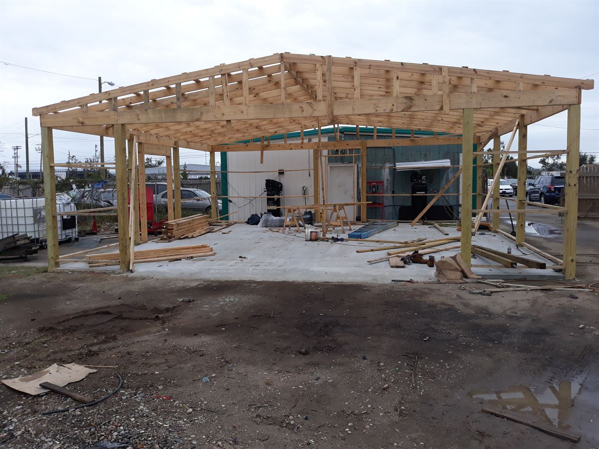
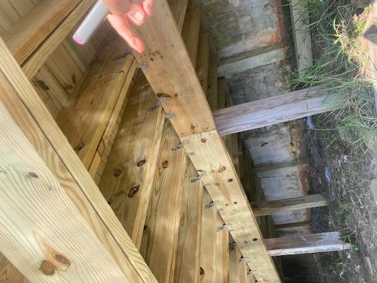

Bay County's Reality
After Hurricane Michael, "code minimum" stopped being enough
In October 2018, Hurricane Michael made landfall near Panama City as one of the strongest storms ever to hit the continental United States. Bay County saw firsthand which buildings held and which didn't — and the difference usually came down to engineering: how the structure was tied together, how the walls were built, and how the openings were protected.
We rebuild and build new with that lesson baked in. The goal isn't just to pass inspection; it's to design a structure that behaves as one continuous system when the wind loads arrive — so your building is standing, and safe, after the next storm.
How We Build For Storms
Four things that decide whether a building survives
1 · Wind-load engineering
The Panhandle sits in a high-velocity wind zone. We calculate the actual wind pressures your building will face — on walls, roof, and every opening — and engineer the structure and connections to resist them, rather than relying on generic assumptions. Those numbers drive every framing and fastening decision.
2 · ICF construction, explained simply
Insulated Concrete Forms are foam blocks that stack like giant bricks, get reinforced with steel, and are filled with concrete. You end up with a solid, steel-reinforced concrete wall wrapped in continuous insulation — one system that resists wind and flying debris while dramatically cutting energy loss.
3 · High-impact glazing
Windows and doors are the weak point in a storm: once an opening fails, wind pressurizes the building from the inside and can lift the roof. Impact-rated glazing and properly engineered openings keep the envelope sealed, protecting both the structure and everything inside it.
4 · Roof-to-foundation load paths
A building survives high wind when the roof, walls, and foundation are physically tied into one continuous chain. We detail that load path — straps, ties, anchors, and connections — so uplift and lateral forces travel all the way down into the ground instead of tearing the structure apart at its weakest joint.

Why An Engineer-Builder Matters
The details only survive if the same team draws them and installs them
Storm resistance lives in connections you never see once the drywall goes up — the strap that ties a rafter to the wall, the anchor that fastens a sill to the concrete, the rebar schedule inside an ICF wall. On too many projects those details get "value-engineered" away or installed wrong after the engineer has left the job.
When the engineer is the builder, that gap closes. We design the load path and then stand on the site making sure it's built the way it was drawn. That's the core reason clients across Bay County trust an engineer-led firm with the buildings that have to weather the Gulf.
Talk To An Engineer-BuilderCommon Questions
Hurricane & construction FAQ
Yes. As a licensed Professional Engineer and General Contractor, we prepare sealed drawings, submit for permits, and coordinate with local building departments and reviewing agencies through inspections and certificate of occupancy. Permitting is part of the service, not an add-on you manage alone.
ICF stands for Insulated Concrete Forms — hollow rigid-foam blocks that stack like bricks, are reinforced with steel, and filled with concrete. The result is a solid, steel-reinforced concrete wall sandwiched in continuous insulation: strong against hurricane wind and debris, quiet, and highly energy efficient, all in a single system.
Yes. We build custom homes and commercial buildings on your lot, including coastal and elevated sites. We can evaluate the site, engineer an appropriate foundation for its soil and flood zone, and design a building suited to its wind exposure.
Design-build means one firm is responsible for both the design and the construction. At ECDC a licensed engineer designs and engineers your project and then builds it, so there are fewer handoffs, tighter coordination, and a single point of accountability from concept to completion.
Yes. ECDC delivers ground-up commercial construction such as fuel stations, restaurants, and retail, as well as custom homes and major residential remodels — all with the same engineering rigor and the same accountable team.
We serve Panama City, Panama City Beach, Lynn Haven, all of Bay County, and the surrounding Florida Panhandle. If you're just outside that area, call us — we're happy to talk through your project.
Building — or rebuilding — in hurricane country?
Let's design a structure that's engineered to stand. Tell us about your site and your goals.